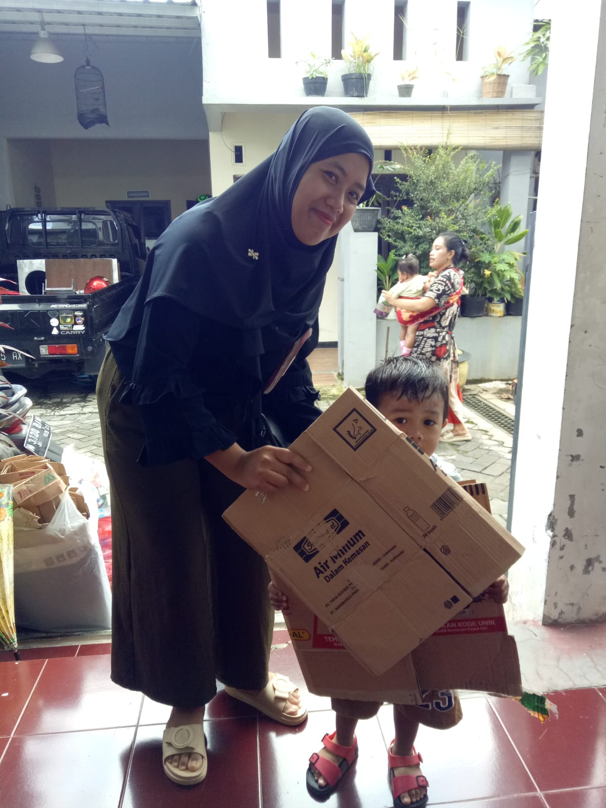
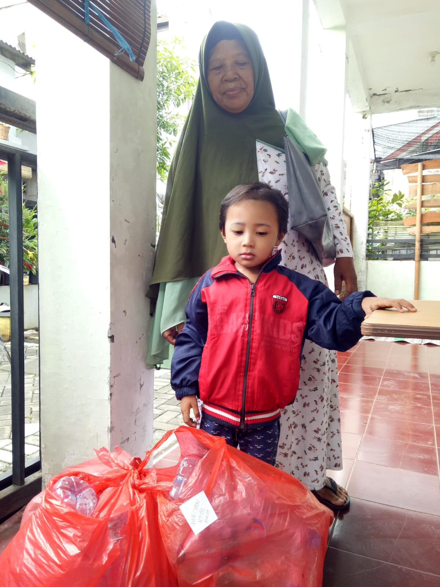
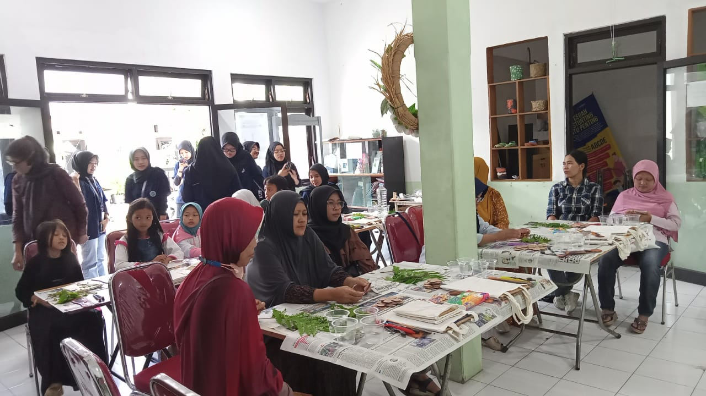

Survey KunjunganSurvey Kunjungan DLH Tangerang Pada 11 Juni 2025Workshop Teknologi Tepat Guna (TTG) SanitasiKoperasi Sampah Bulan Juli 2025Penyetoran Koperasi Sampah Sekar MelatiPelmilahan Sampah Sebelum di Setorkan

Program Donat Posyandu (Donasi Sampah Untuk PMT) dari Balita Yang Hadir Posyandu

Program Donat Posyandu (Donasi Sampah Untuk PMT) dari Balita Yang Hadir PosyanduPelatihan Lijel AromaterapiPelatihan Lijel Aromaterapi Bersama MahasiswaPengangkutan Sampah Yang Akan Disetorkan Oleh Koperasi SampahPenyetoran Minyak Jelantah Kepada PengepulPelatihan Pembuatan AirbashPelatihan Pembuatan Batik EcobrushPelatihan Pembuatan Keset Berbahan Baju Bekas di Cantuka KreatifEvaluasi Setelah Kegiatan PosyanduKunjungan Posyandu RemajaPelaksanaan Posyandu Di RW 01Kelas Ibu Hamil RW 01Pendampingan Ibu Hamil RW 01Kegiatan Posyandu Bersama Ibu - Ibu RW 01Kegiatan Kader Pra PosyanduPenimbangan Balita Di PosyanduPengukuran Tinggi Badan Di PosyanduPelatihan Pemilahan Pengolahan dan Pemanfaatan Sampah Bersama BPP Pertanian LowokwaruPembuatan Sabun Cair Serbaguna Berbahan Utama Eco-enzim

Pelatihan Pembuatan BatikSosialisasi STBM Bersama Mahasiswa Di RW 06Sosialisasi STBM Bersama Mahasiswa Di RW 06Penilaian STBM Award 2023 - 21 September 2023